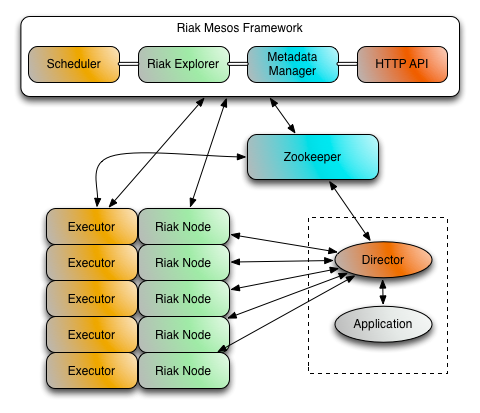

An Apache Mesos framework for Riak KV, a distributed NoSQL key-value data store that offers high availability, fault tolerance, operational simplicity, and scalability.
The Riak Mesos Framework is managed by Marathon and coordinates with Mesos to keep large Riak KV clusters connected and running. The Riak Mesos Framework scheduler will attempt to spread Riak KV nodes across as many different mesos agents as possible to increase fault tolerance. If there are more nodes requested than there are agents available, the scheduler will then start adding more Riak KV nodes to existing agents.

Applications outside of Mesos can communicate with Riak on Mesos via a smart proxy called the "Riak Mesos Director". Due to the nature of Apache Mesos and the potential for Riak KV nodes to come and go on a regular basis, client applications using a Mesos based cluster must be kept up to date on the cluster's current state. Instead of requiring this intelligence to be built into Riak client libraries, a smart proxy application named Director has been created which can run alongside client applications.
The Director communicates with Zookeeper to keep up to date with Riak KV cluster changes. The Director in turn will update it's list of balanced Riak KV connections.
